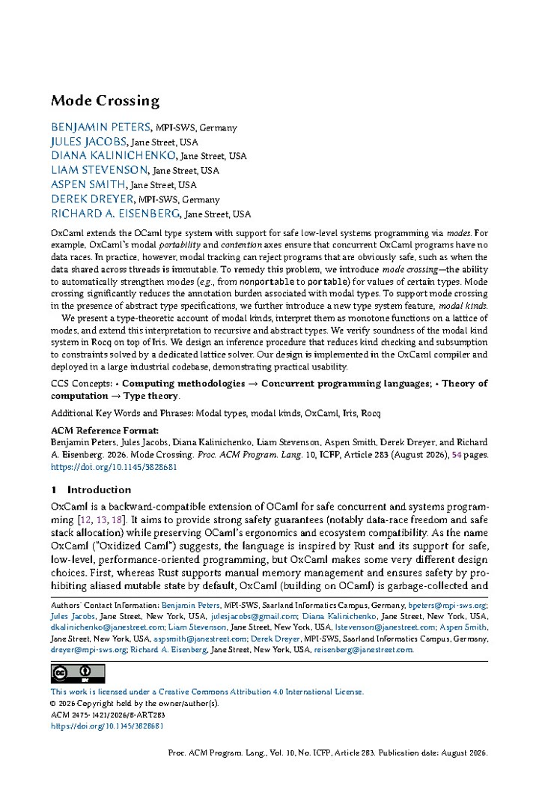

OxCaml's modes rule out data races, but mode tracking can reject obviously safe programs, such as ones sharing immutable data across threads. This paper introduces mode crossing, which strengthens modes automatically for values of certain types, through modal kinds. Their soundness is verified in Rocq on top of Iris, and the design is implemented in a large industrial codebase.

Read the paperOxCaml extends the OCaml type system with support for safe low-level systems programming via modes. For example, OxCaml's modal portability and contention axes ensure that concurrent OxCaml programs have no data races. In practice, however, mode tracking can reject programs that are obviously safe, such as when the data shared across threads is immutable. To remedy this problem, we introduce mode crossing—the ability to automatically strengthen modes (e.g., from nonportable to portable) for values of certain types. Mode crossing significantly reduces the annotation burden associated with modal types, and we further introduce a new type system feature, modal kinds.
We present a type-theoretic account of modal kinds, interpret them as monotone functions on a lattice of modes, and extend this interpretation to incorporate abstract types. We verify soundness of the modal kind system in Rocq on top of Iris. We design an inference procedure that reduces kind checking and subsumption to constraints solved by a dedicated lattice solver. Our design is implemented in a large industrial codebase, demonstrating practical usability.
@article{peters2026modecrossing,
title = {Mode Crossing},
volume = {10},
ISSN = {2475-1421},
url = {https://doi.org/10.1145/3828681},
DOI = {10.1145/3828681},
number = {ICFP},
journal = {Proceedings of the ACM on Programming Languages},
publisher = {Association for Computing Machinery (ACM)},
author = {Peters, Benjamin and Jacobs, Jules and Kalinichenko, Diana and Stevenson, Liam and Smith, Aspen and Dreyer, Derek and Eisenberg, Richard A.},
year = {2026},
month = Aug,
pages = {236--266}
}